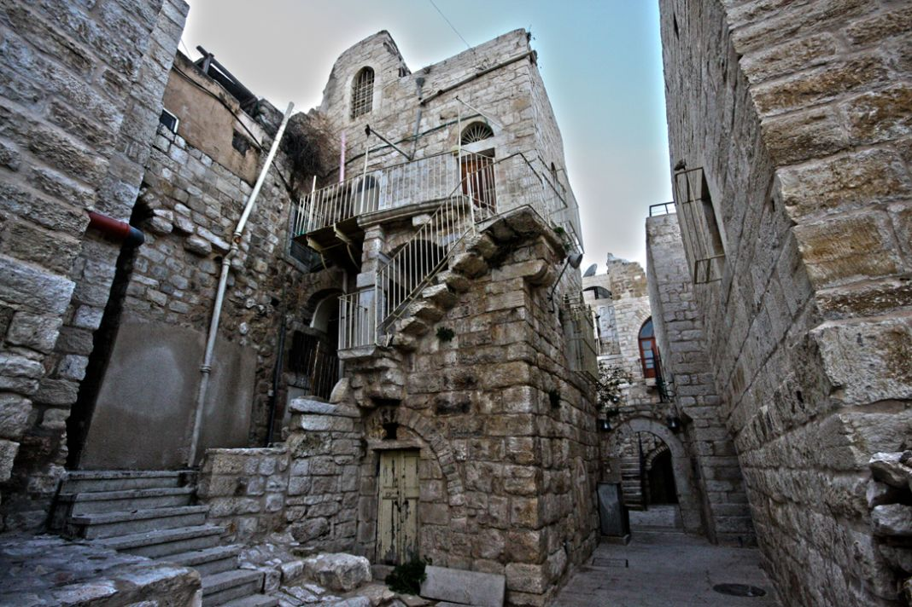

Bethlehem, is the name of a city in the south of Jerusalem city called The House of Eli Lahama, where Lahama is the name of Harvest and Fertility God among the Canaanites. Later, the name of the city became known as Beit Ham, then changed to Ephrata which is an Aramaic word means Fertility. Others said that the word Ephrata is a Chaldean word. In Arabic, Beth means The House, and Lehem means Meat, which is considered as an expression of fertile pastures and the large number of livestock. In Hebrew, Bethlehem means The House of Bread. and noted that the significance of any of Bethlehem in all those languages are referred to fertility and good soil. It is noticeable that in all those languages, Bethlehem refers to fertility and good soil. There are several countries who have given the name of Bethlehem to their cities like Argentina, Uruguay, Portugal, Colombia, Mexico and the United States of America.
Bethlehem's historic residential quarters Harat Bethlehem have developed through the ages represent part of the cultural heritage of Bethlehem. Each Quarter consists of several families whose men used to gather together to discuss the affairs of their lives, and their own issues. These quarters are part of the cultural heritage in Bethlehem. These quarters are: Al-Farahya, Al-Najajreh, Al-Tarajmeh, Al-Anatreh, Al-Hreizat, Al-Qawawseh, Al-Fawaghreh and the Assyrians.
Important Visits To Bethlehem:
Bethlehem is one of the most important Palestinian cities to establish international conferences and forums. The city has hosted so many celebrations and events, including the reception of former US President George W. Bush, Bill Clinton, and the current US President Barack Obama during their visit to the Church of the Nativity, in addition to hosting the Conference of the Arab Economic and the sixth Conference of the Palestinian National Liberation Movement (Fateh). Among the most important visits to Bethlehem are the visits of the popes of the Vatican's visit to the city, and the most recent one was the visit of His Holiness Pope Francis on May 25, 2014.
Religious and archaeological sites:
The city of Bethlehem is one of the holiest Christian sites in the world, since it’s identified as the birthplace of Jesus Christ. Bethlehem holds an extraordinary spiritual and historical significance due to its unique religious sites in particular the Nativity Church, Milk Grotto Church and other sites. Being the birth of Jesus, the city enjoys wide popularity especially during Christmas time, the Church of the Nativity was the first among the three churches built by the Emperor Constantine in the early fourth century AD when Christianity became the official state religion in 326 AD. In 2012, the Nativity Church and the old city were added to the list of World Heritage Sites, to become the, Church of the Nativity is the first Palestinian sites to be registered within the UNESCO World Heritage List. One of the most important mosques in the city is the Mosque of Omar bin al-Khattab, which is located in the manger Square. Bethlehem is an area rich with historical and religious sites. Where one can find some Roman, Byzantine, Islamic ruins. In addition, there are many sites of special interest to followers of the three monotheistic religions, as Rachel's Tomb, and the wells of King David, the water channel, Jacir Palace, and Solomon's Pools and others, which made it one of the most important tourist cities in the world, with approximately one million tourists visiting per year. In Bethlehem, there are more than 30 hotels and tourist resorts and more than 138 restaurants.